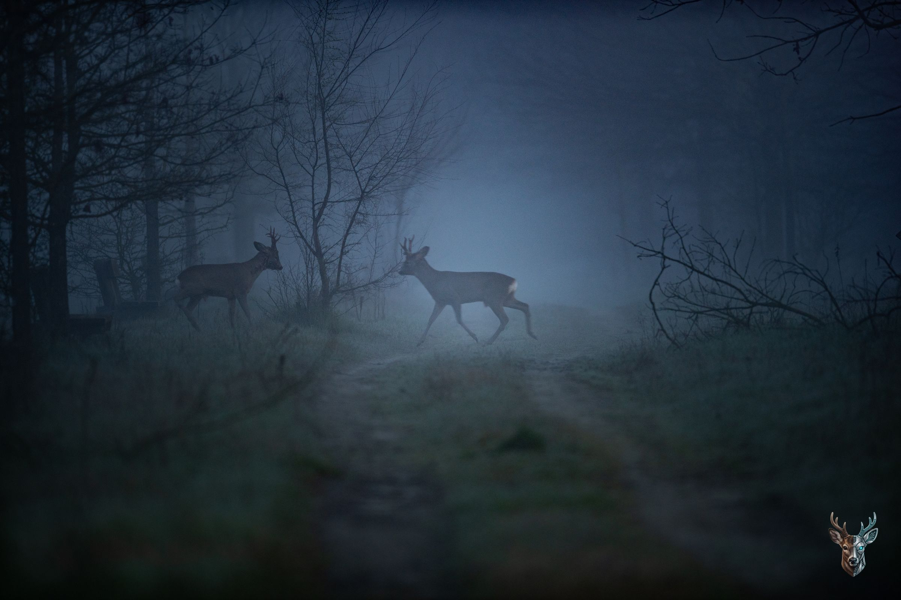

Federico Dorigo
Fotografia naturalistica nel Parco del Ticino, dalla prima luce al tramonto.
Alba nella nebbia
16 marzo 2024
Mattino
Caprioli nei prati, maggio 2024
Autunno
Daini nel bosco
Tramonto
Una volpe tra i campi di mais
La precisione del codice, l'anima della luce.
Con un background nella consulenza informatica, analizzo lo spazio con rigore logico. La mia fotografia cerca l'equilibrio tra le strutture geometriche create dall'uomo e l'imprevedibilità della luce naturale.
La tecnica deve essere invisibile, per lasciare spazio solo alla visione.